; picked in K562 (state 8:EnhW, DNase); matched; chr4:39,559,909-39,560,203 (295bp)") 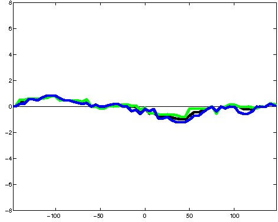
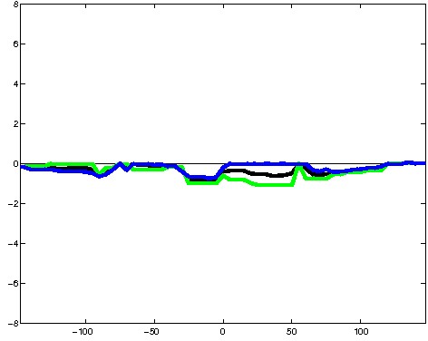
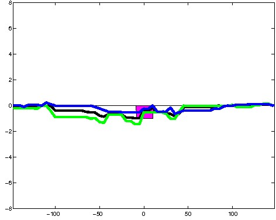
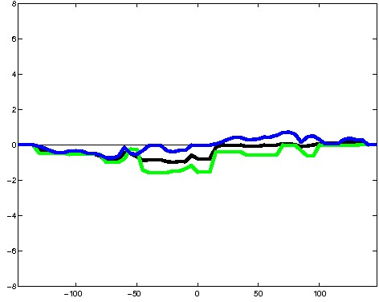
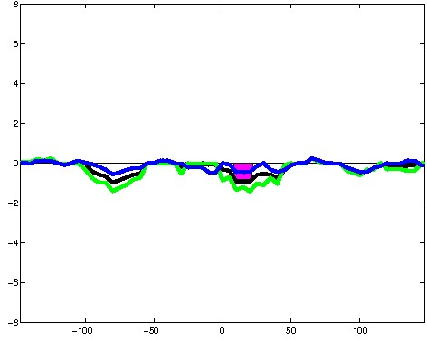
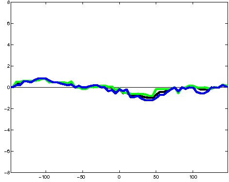
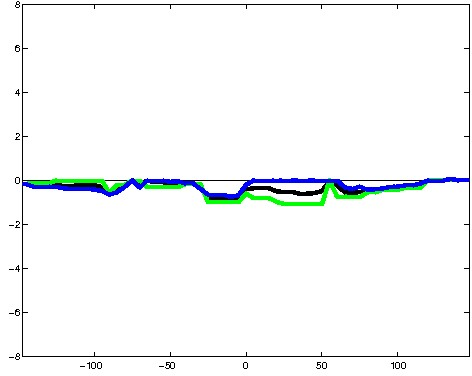
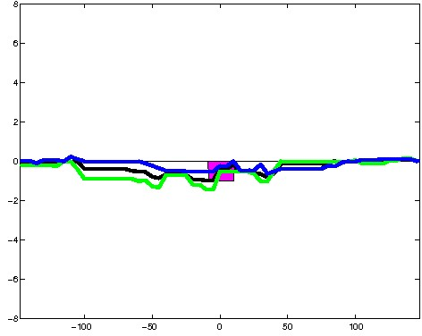
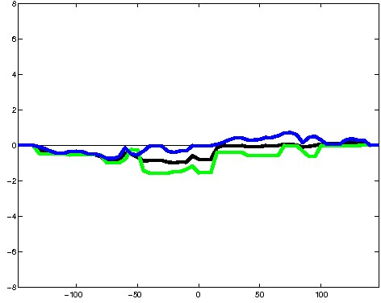
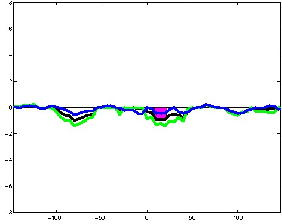
; picked in K562 (state 8:EnhW, DNase); matched; chr12:113,646,189-113,646,483 (295bp)") 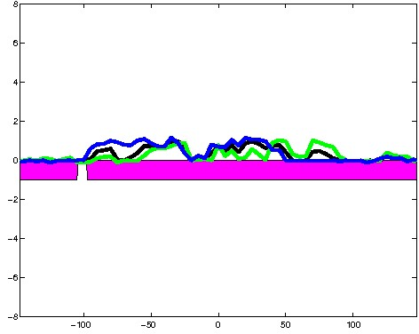
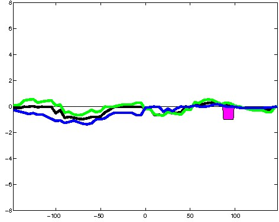
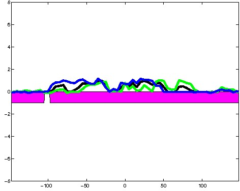
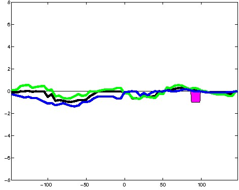
; picked in K562 (state 8:EnhW, DNase); matched; chr14:34,035,389-34,035,683 (295bp)") 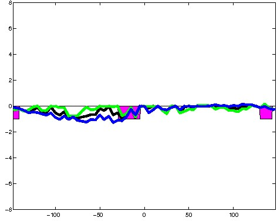
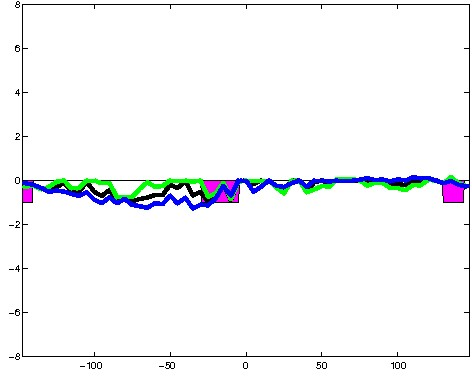
; picked in K562 (state 8:EnhW, DNase); matched; chr1:28,981,989-28,982,283 (295bp)")
; picked in K562 (state 8:EnhW, DNase); matched; chr5:126,359,549-126,359,843 (295bp)")
; picked in K562 (state 8:EnhW, DNase); matched; chr12:123,579,249-123,579,543 (295bp)")
; picked in K562 (state 8:EnhW, DNase); matched; chr1:162,427,149-162,427,443 (295bp)") 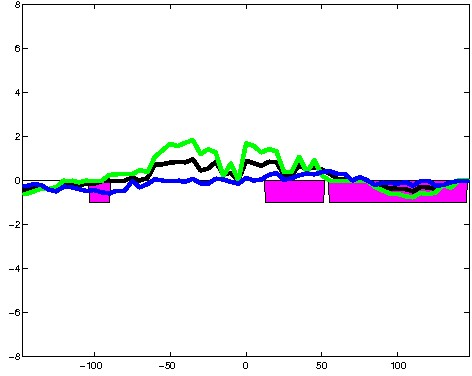
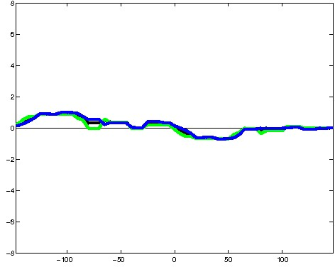
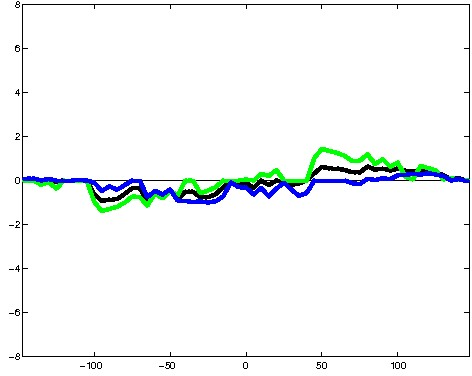
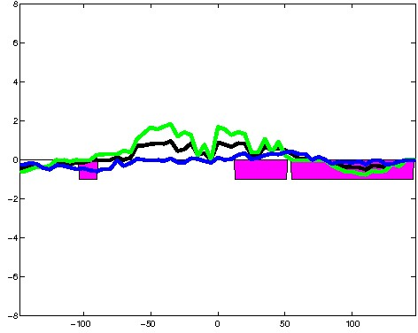
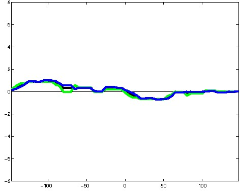
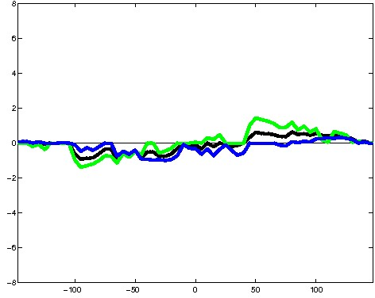
; picked in K562 (state 8:EnhW, DNase); matched; chr16:88,482,429-88,482,723 (295bp)")
; picked in K562 (state 8:EnhW, DNase); matched; chr2:242,486,069-242,486,363 (295bp)")
; picked in K562 (state 8:EnhW, DNase); matched; chr11:8,790,529-8,790,823 (295bp)")
; picked in K562 (state 8:EnhW, DNase); matched; chrX:16,751,209-16,751,503 (295bp)")
; picked in K562 (state 8:EnhW, DNase); matched; chr4:1,680,169-1,680,463 (295bp)") 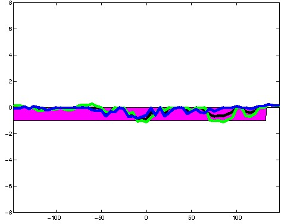
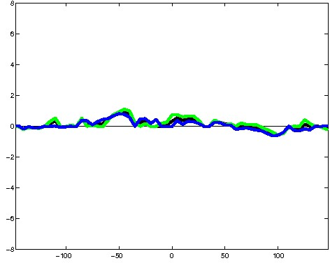
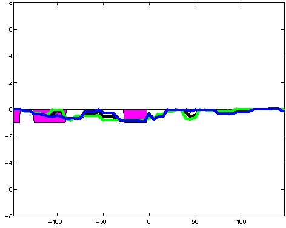
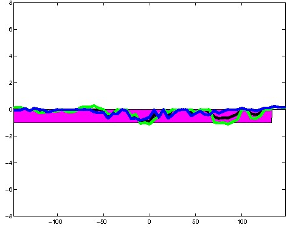
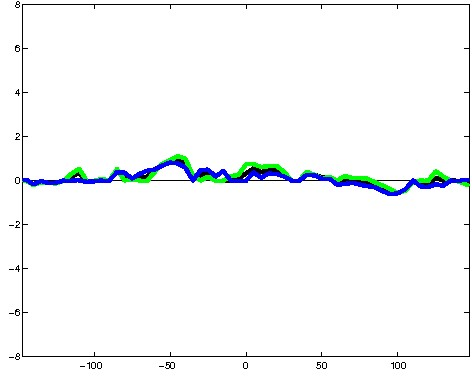
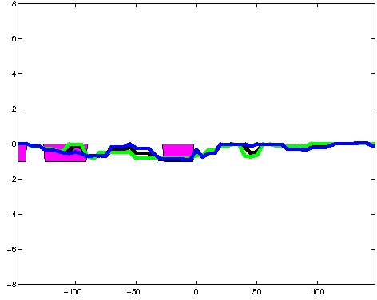
; picked in K562 (state 8:EnhW, DNase); matched; chr7:1,965,549-1,965,843 (295bp)")
; picked in K562 (state 8:EnhW, DNase); matched; chr15:22,988,909-22,989,203 (295bp)")
; picked in K562 (state 8:EnhW, DNase); matched; chr1:248,008,729-248,009,023 (295bp)")
; picked in K562 (state 8:EnhW, DNase); matched; chr5:14,282,029-14,282,323 (295bp)")
; picked in K562 (state 8:EnhW, DNase); matched; chr2:237,086,229-237,086,523 (295bp)")
; picked in K562 (state 8:EnhW, DNase); matched; chr6:36,545,149-36,545,443 (295bp)") 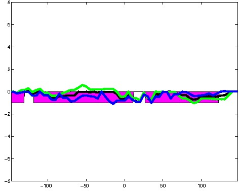
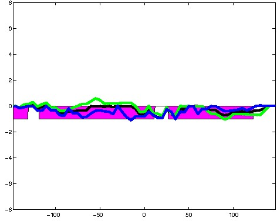
; picked in K562 (state 8:EnhW, DNase); matched; chr16:30,855,989-30,856,283 (295bp)") 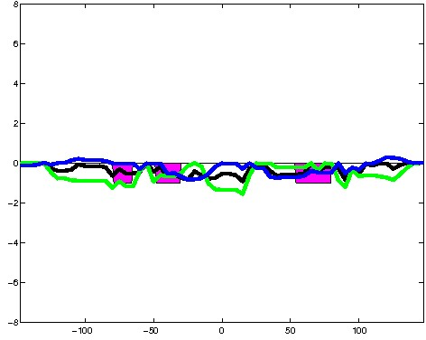
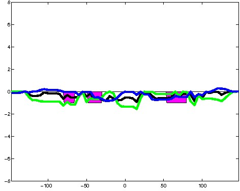
; picked in K562 (state 8:EnhW, DNase); matched; chr10:126,236,249-126,236,543 (295bp)") 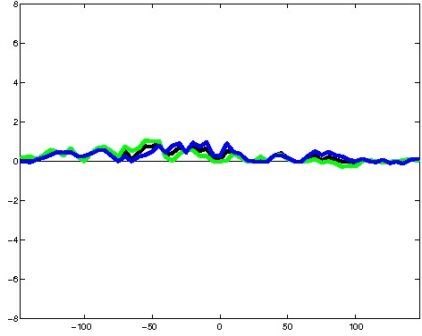
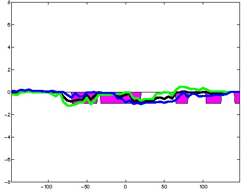
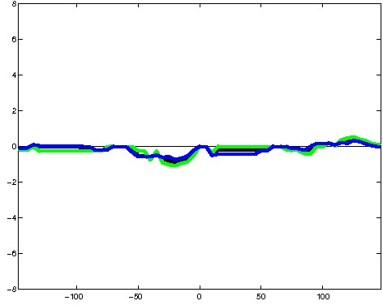
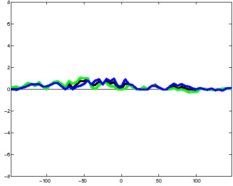
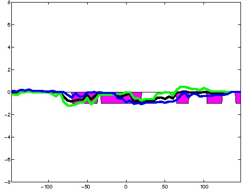
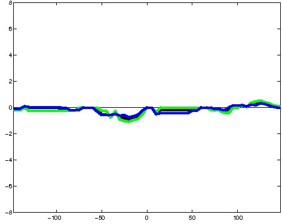
; picked in K562 (state 8:EnhW, DNase); matched; chr12:1,759,829-1,760,123 (295bp)") 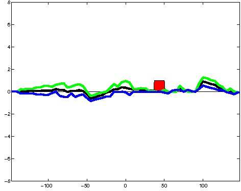
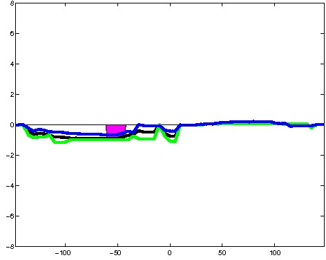
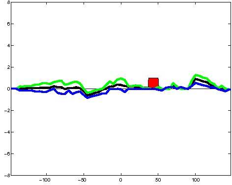
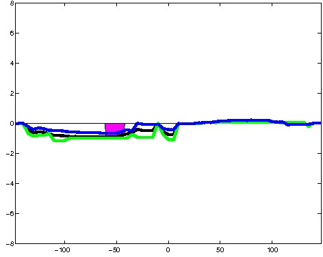
; picked in K562 (state 8:EnhW, DNase); matched; chr16:67,560,369-67,560,663 (295bp)")
; picked in K562 (state 8:EnhW, DNase); matched; chr2:11,310,529-11,310,823 (295bp)") 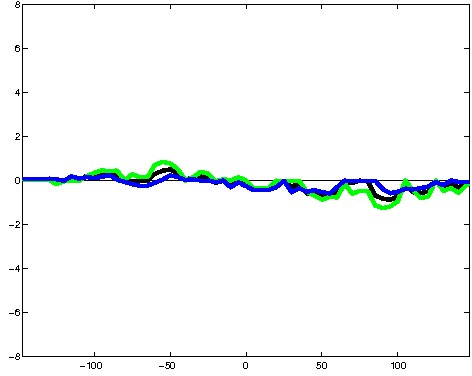
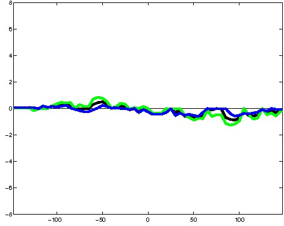
; picked in K562 (state 8:EnhW, DNase); matched; chr1:145,639,249-145,639,543 (295bp)")
; picked in K562 (state 8:EnhW, DNase); matched; chr17:7,269,269-7,269,563 (295bp)") 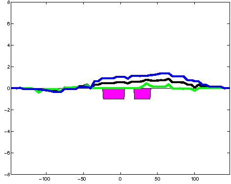
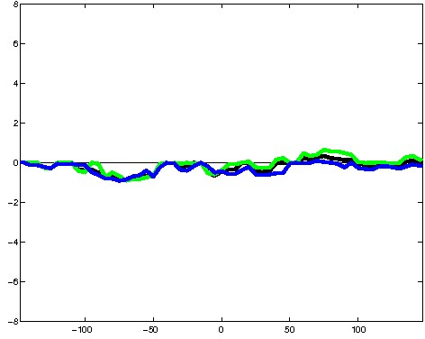
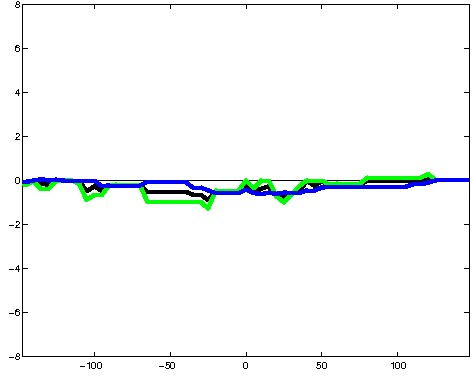
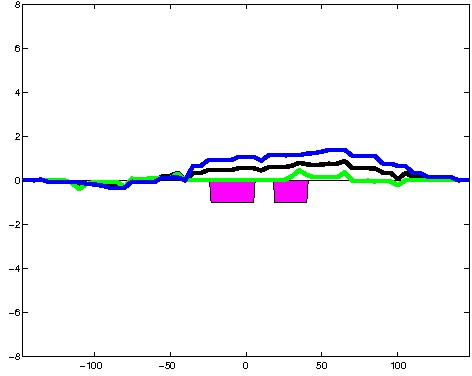
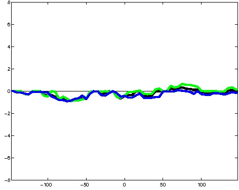
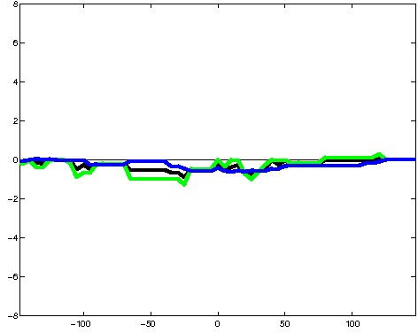
; picked in K562 (state 8:EnhW, DNase); matched; chr16:67,830,249-67,830,543 (295bp)")
; picked in K562 (state 8:EnhW, DNase); matched; chr7:75,418,049-75,418,343 (295bp)") 


; picked in K562 (state 8:EnhW, DNase); matched; chr17:10,748,429-10,748,723 (295bp)")
; picked in K562 (state 8:EnhW, DNase); matched; chr22:23,922,949-23,923,243 (295bp)") 


; picked in K562 (state 8:EnhW, DNase); matched; chr16:21,034,869-21,035,163 (295bp)")
; picked in K562 (state 8:EnhW, DNase); matched; chr10:98,386,629-98,386,923 (295bp)")
; picked in K562 (state 8:EnhW, DNase); matched; chr6:154,971,609-154,971,903 (295bp)")
; picked in K562 (state 8:EnhW, DNase); matched; chr8:130,897,729-130,898,023 (295bp)") 

; picked in K562 (state 8:EnhW, DNase); matched; chr5:149,489,609-149,489,903 (295bp)") 

; picked in K562 (state 8:EnhW, DNase); matched; chr1:226,541,749-226,542,043 (295bp)")
; picked in K562 (state 8:EnhW, DNase); matched; chr12:58,268,509-58,268,803 (295bp)")
; picked in K562 (state 8:EnhW, DNase); matched; chr3:53,387,269-53,387,563 (295bp)")
; picked in K562 (state 8:EnhW, DNase); matched; chr10:121,075,129-121,075,423 (295bp)")
; picked in K562 (state 8:EnhW, DNase); matched; chr20:39,763,909-39,764,203 (295bp)")
; picked in K562 (state 8:EnhW, DNase); matched; chr9:107,631,329-107,631,623 (295bp)") 

; picked in K562 (state 8:EnhW, DNase); matched; chr16:19,897,649-19,897,943 (295bp)")
; picked in K562 (state 8:EnhW, DNase); matched; chr1:26,033,949-26,034,243 (295bp)") 


; picked in K562 (state 8:EnhW, DNase); matched; chr3:122,803,829-122,804,123 (295bp)")
; picked in K562 (state 8:EnhW, DNase); matched; chr19:17,488,109-17,488,403 (295bp)")
; picked in K562 (state 8:EnhW, DNase); matched; chr2:197,466,229-197,466,523 (295bp)") 


; picked in K562 (state 8:EnhW, DNase); matched; chr20:281,849-282,143 (295bp)")
; picked in K562 (state 8:EnhW, DNase); matched; chr6:37,114,449-37,114,743 (295bp)")
; picked in K562 (state 8:EnhW, DNase); matched; chr5:151,120,169-151,120,463 (295bp)")
; picked in K562 (state 8:EnhW, DNase); matched; chr19:56,134,849-56,135,143 (295bp)")
; picked in K562 (state 8:EnhW, DNase); matched; chr7:119,719,849-119,720,143 (295bp)")
; picked in K562 (state 8:EnhW, DNase); matched; chr19:30,361,989-30,362,283 (295bp)")
; picked in K562 (state 8:EnhW, DNase); matched; chr17:74,794,429-74,794,723 (295bp)") 


; picked in K562 (state 8:EnhW, DNase); matched; chr19:6,481,989-6,482,283 (295bp)")
; picked in K562 (state 8:EnhW, DNase); matched; chrX:134,042,509-134,042,803 (295bp)") 

; picked in K562 (state 8:EnhW, DNase); matched; chr8:95,905,809-95,906,103 (295bp)")
; picked in K562 (state 8:EnhW, DNase); matched; chr4:55,360,049-55,360,343 (295bp)")
; picked in K562 (state 8:EnhW, DNase); matched; chr7:44,917,269-44,917,563 (295bp)") 


; picked in K562 (state 8:EnhW, DNase); matched; chr2:55,686,449-55,686,743 (295bp)")
; picked in K562 (state 8:EnhW, DNase); matched; chr16:58,530,269-58,530,563 (295bp)") 

; picked in K562 (state 8:EnhW, DNase); matched; chr1:1,295,949-1,296,243 (295bp)")
; picked in K562 (state 8:EnhW, DNase); matched; chr1:157,237,689-157,237,983 (295bp)")
; picked in K562 (state 8:EnhW, DNase); matched; chr10:114,437,509-114,437,803 (295bp)") 


; picked in K562 (state 8:EnhW, DNase); matched; chr7:8,028,829-8,029,123 (295bp)") 

; picked in K562 (state 8:EnhW, DNase); matched; chr20:45,187,689-45,187,983 (295bp)")
; picked in K562 (state 8:EnhW, DNase); matched; chr15:49,593,829-49,594,123 (295bp)") 

; picked in K562 (state 8:EnhW, DNase); matched; chr3:141,010,409-141,010,703 (295bp)")
; picked in K562 (state 8:EnhW, DNase); matched; chr18:3,346,509-3,346,803 (295bp)") 

; picked in K562 (state 8:EnhW, DNase); matched; chr7:73,132,329-73,132,623 (295bp)")
; picked in K562 (state 8:EnhW, DNase); matched; chr21:37,522,569-37,522,863 (295bp)")
; picked in K562 (state 8:EnhW, DNase); matched; chr22:33,046,929-33,047,223 (295bp)")
; picked in K562 (state 8:EnhW, DNase); matched; chr11:113,244,789-113,245,083 (295bp)")
; picked in K562 (state 8:EnhW, DNase); matched; chr2:42,161,109-42,161,403 (295bp)")
; picked in K562 (state 8:EnhW, DNase); matched; chr6:134,751,009-134,751,303 (295bp)")
; picked in K562 (state 8:EnhW, DNase); matched; chr7:138,797,169-138,797,463 (295bp)")
; picked in K562 (state 8:EnhW, DNase); matched; chr8:61,729,549-61,729,843 (295bp)")
; picked in K562 (state 8:EnhW, DNase); matched; chr8:101,896,149-101,896,443 (295bp)")
; picked in K562 (state 8:EnhW, DNase); matched; chr11:11,887,789-11,888,083 (295bp)")
; picked in K562 (state 8:EnhW, DNase); matched; chr6:69,611,009-69,611,303 (295bp)")
; picked in K562 (state 8:EnhW, DNase); matched; chr2:220,376,429-220,376,723 (295bp)")
; picked in K562 (state 8:EnhW, DNase); matched; chr16:27,771,709-27,772,003 (295bp)")
; picked in K562 (state 8:EnhW, DNase); matched; chr2:152,204,489-152,204,783 (295bp)")
; picked in K562 (state 8:EnhW, DNase); matched; chr12:125,031,029-125,031,323 (295bp)")
; picked in K562 (state 8:EnhW, DNase); matched; chr7:23,098,369-23,098,663 (295bp)")
; picked in K562 (state 8:EnhW, DNase); matched; chr11:67,089,189-67,089,483 (295bp)")
; picked in K562 (state 8:EnhW, DNase); matched; chr9:127,128,809-127,129,103 (295bp)")
; picked in K562 (state 8:EnhW, DNase); matched; chr10:51,541,209-51,541,503 (295bp)")
; picked in K562 (state 8:EnhW, DNase); matched; chr10:69,613,289-69,613,583 (295bp)")
; picked in K562 (state 8:EnhW, DNase); matched; chrX:47,612,109-47,612,403 (295bp)")
; picked in K562 (state 8:EnhW, DNase); matched; chr4:71,564,229-71,564,523 (295bp)")
; picked in K562 (state 8:EnhW, DNase); matched; chr20:23,042,789-23,043,083 (295bp)")
; picked in K562 (state 8:EnhW, DNase); matched; chrX:40,132,629-40,132,923 (295bp)")
; picked in K562 (state 8:EnhW, DNase); matched; chr13:52,691,349-52,691,643 (295bp)")
; picked in K562 (state 8:EnhW, DNase); matched; chr11:3,235,089-3,235,383 (295bp)")
; picked in K562 (state 8:EnhW, DNase); matched; chr16:48,443,889-48,444,183 (295bp)")
; picked in K562 (state 8:EnhW, DNase); matched; chr1:205,111,329-205,111,623 (295bp)")
; picked in K562 (state 8:EnhW, DNase); matched; chr13:79,224,149-79,224,443 (295bp)")
; picked in K562 (state 8:EnhW, DNase); matched; chr12:124,508,949-124,509,243 (295bp)")
; picked in K562 (state 8:EnhW, DNase); matched; chr4:166,269,909-166,270,203 (295bp)")
; picked in K562 (state 8:EnhW, DNase); matched; chr6:7,062,709-7,063,003 (295bp)")
; picked in K562 (state 8:EnhW, DNase); matched; chr2:202,304,929-202,305,223 (295bp)")
; picked in K562 (state 8:EnhW, DNase); matched; chr2:26,214,849-26,215,143 (295bp)")
; picked in K562 (state 8:EnhW, DNase); matched; chr12:68,673,169-68,673,463 (295bp)")
; picked in K562 (state 8:EnhW, DNase); matched; chr11:69,828,969-69,829,263 (295bp)")
; picked in K562 (state 8:EnhW, DNase); matched; chr3:15,408,669-15,408,963 (295bp)")
; picked in K562 (state 8:EnhW, DNase); matched; chr6:13,767,789-13,768,083 (295bp)")
; picked in K562 (state 8:EnhW, DNase); matched; chr16:88,615,649-88,615,943 (295bp)")
; picked in K562 (state 8:EnhW, DNase); matched; chr11:65,595,329-65,595,623 (295bp)")
; picked in K562 (state 8:EnhW, DNase); matched; chr11:114,177,929-114,178,223 (295bp)")
; picked in K562 (state 8:EnhW, DNase); matched; chr6:109,366,669-109,366,963 (295bp)")
; picked in K562 (state 8:EnhW, DNase); matched; chr8:38,831,049-38,831,343 (295bp)")
; picked in K562 (state 8:EnhW, DNase); matched; chr19:14,330,549-14,330,843 (295bp)")
; picked in K562 (state 8:EnhW, DNase); matched; chr5:53,519,929-53,520,223 (295bp)")
; picked in K562 (state 8:EnhW, DNase); matched; chr5:42,852,989-42,853,283 (295bp)")
; picked in K562 (state 8:EnhW, DNase); matched; chr8:28,943,089-28,943,383 (295bp)")
; picked in K562 (state 8:EnhW, DNase); matched; chr5:169,567,069-169,567,363 (295bp)")
; picked in K562 (state 8:EnhW, DNase); matched; chrX:38,659,229-38,659,523 (295bp)")
; picked in K562 (state 8:EnhW, DNase); matched; chr1:22,349,369-22,349,663 (295bp)")
; picked in K562 (state 8:EnhW, DNase); matched; chr1:21,031,989-21,032,283 (295bp)")
; picked in K562 (state 8:EnhW, DNase); matched; chr18:57,628,409-57,628,703 (295bp)")
; picked in K562 (state 8:EnhW, DNase); matched; chr1:179,946,169-179,946,463 (295bp)")
; picked in K562 (state 8:EnhW, DNase); matched; chr10:21,506,929-21,507,223 (295bp)")
; picked in K562 (state 8:EnhW, DNase); matched; chr11:107,884,969-107,885,263 (295bp)")
; picked in K562 (state 8:EnhW, DNase); matched; chr3:193,981,709-193,982,003 (295bp)")
; picked in K562 (state 8:EnhW, DNase); matched; chr4:103,276,989-103,277,283 (295bp)")
; picked in K562 (state 8:EnhW, DNase); matched; chr19:21,341,369-21,341,663 (295bp)")
; picked in K562 (state 8:EnhW, DNase); matched; chr20:48,509,449-48,509,743 (295bp)")
; picked in K562 (state 8:EnhW, DNase); matched; chr17:43,430,429-43,430,723 (295bp)")
; picked in K562 (state 8:EnhW, DNase); matched; chr9:38,008,169-38,008,463 (295bp)")
; picked in K562 (state 8:EnhW, DNase); matched; chr9:97,787,549-97,787,843 (295bp)")
; picked in K562 (state 8:EnhW, DNase); matched; chr1:8,963,589-8,963,883 (295bp)")
; picked in K562 (state 8:EnhW, DNase); matched; chr19:10,757,549-10,757,843 (295bp)")
; picked in K562 (state 8:EnhW, DNase); matched; chr1:205,235,329-205,235,623 (295bp)")
; picked in K562 (state 8:EnhW, DNase); matched; chr15:39,807,989-39,808,283 (295bp)")
; picked in K562 (state 8:EnhW, DNase); matched; chr6:140,087,449-140,087,743 (295bp)")
; picked in K562 (state 8:EnhW, DNase); matched; chr5:176,994,289-176,994,583 (295bp)")
; picked in K562 (state 8:EnhW, DNase); matched; chr2:11,413,809-11,414,103 (295bp)")
; picked in K562 (state 8:EnhW, DNase); matched; chr10:32,108,269-32,108,563 (295bp)")
; picked in K562 (state 8:EnhW, DNase); matched; chr3:171,273,929-171,274,223 (295bp)")
; picked in K562 (state 8:EnhW, DNase); matched; chr12:127,561,789-127,562,083 (295bp)")
; picked in K562 (state 8:EnhW, DNase); matched; chr16:4,332,449-4,332,743 (295bp)")
; picked in K562 (state 8:EnhW, DNase); matched; chr2:169,887,829-169,888,123 (295bp)")
; picked in K562 (state 8:EnhW, DNase); matched; chr7:1,547,989-1,548,283 (295bp)")
; picked in K562 (state 8:EnhW, DNase); matched; chr20:39,861,029-39,861,323 (295bp)")
; picked in K562 (state 8:EnhW, DNase); matched; chr15:96,666,229-96,666,523 (295bp)")
; picked in K562 (state 8:EnhW, DNase); matched; chr2:169,972,729-169,973,023 (295bp)")
; picked in K562 (state 8:EnhW, DNase); matched; chr17:78,606,069-78,606,363 (295bp)")
; picked in K562 (state 8:EnhW, DNase); matched; chr5:102,600,449-102,600,743 (295bp)")
; picked in K562 (state 8:EnhW, DNase); matched; chr1:207,134,369-207,134,663 (295bp)")
; picked in K562 (state 8:EnhW, DNase); matched; chr1:168,082,249-168,082,543 (295bp)")
; picked in K562 (state 8:EnhW, DNase); matched; chr7:13,299,589-13,299,883 (295bp)")
; picked in K562 (state 8:EnhW, DNase); matched; chrX:67,804,109-67,804,403 (295bp)")
; picked in K562 (state 8:EnhW, DNase); matched; chr1:204,431,329-204,431,623 (295bp)")
; picked in K562 (state 8:EnhW, DNase); matched; chr7:99,768,209-99,768,503 (295bp)")
; picked in K562 (state 8:EnhW, DNase); matched; chr6:69,442,329-69,442,623 (295bp)")
; picked in K562 (state 8:EnhW, DNase); matched; chr1:183,614,889-183,615,183 (295bp)")
; picked in K562 (state 8:EnhW, DNase); matched; chr20:46,169,769-46,170,063 (295bp)")
; picked in K562 (state 8:EnhW, DNase); matched; chr4:159,732,009-159,732,303 (295bp)")
; picked in K562 (state 8:EnhW, DNase); matched; chr1:31,956,229-31,956,523 (295bp)")
; picked in K562 (state 8:EnhW, DNase); matched; chr3:191,052,949-191,053,243 (295bp)")
; picked in K562 (state 8:EnhW, DNase); matched; chr10:97,166,669-97,166,963 (295bp)")
; picked in K562 (state 8:EnhW, DNase); matched; chr3:5,093,429-5,093,723 (295bp)")
; picked in K562 (state 8:EnhW, DNase); matched; chr9:101,094,169-101,094,463 (295bp)")
; picked in K562 (state 8:EnhW, DNase); matched; chr11:12,706,409-12,706,703 (295bp)")
; picked in K562 (state 8:EnhW, DNase); matched; chr5:131,723,289-131,723,583 (295bp)")
; picked in K562 (state 8:EnhW, DNase); matched; chr15:78,362,549-78,362,843 (295bp)")
; picked in K562 (state 8:EnhW, DNase); matched; chr6:100,657,489-100,657,783 (295bp)")
; picked in K562 (state 8:EnhW, DNase); matched; chr17:46,445,769-46,446,063 (295bp)")
; picked in K562 (state 8:EnhW, DNase); matched; chr3:142,536,829-142,537,123 (295bp)")
; picked in K562 (state 8:EnhW, DNase); matched; chr3:171,125,609-171,125,903 (295bp)")
; picked in K562 (state 8:EnhW, DNase); matched; chr12:94,093,249-94,093,543 (295bp)")
; picked in K562 (state 8:EnhW, DNase); matched; chr12:121,522,289-121,522,583 (295bp)")
; picked in K562 (state 8:EnhW, DNase); matched; chr1:114,361,209-114,361,503 (295bp)")
; picked in K562 (state 8:EnhW, DNase); matched; chr1:94,176,609-94,176,903 (295bp)")
; picked in K562 (state 8:EnhW, DNase); matched; chr6:28,473,569-28,473,863 (295bp)")
; picked in K562 (state 8:EnhW, DNase); matched; chr6:11,070,029-11,070,323 (295bp)")
; picked in K562 (state 8:EnhW, DNase); matched; chr9:71,260,089-71,260,383 (295bp)")
; picked in K562 (state 8:EnhW, DNase); matched; chr6:15,987,809-15,988,103 (295bp)")
; picked in K562 (state 8:EnhW, DNase); matched; chr15:67,094,049-67,094,343 (295bp)")
; picked in K562 (state 8:EnhW, DNase); matched; chr1:246,589,609-246,589,903 (295bp)")
; picked in K562 (state 8:EnhW, DNase); matched; chr15:69,450,789-69,451,083 (295bp)")
; picked in K562 (state 8:EnhW, DNase); matched; chr6:20,575,469-20,575,763 (295bp)")
; picked in K562 (state 8:EnhW, DNase); matched; chr17:57,531,089-57,531,383 (295bp)")
; picked in K562 (state 8:EnhW, DNase); matched; chr14:31,734,889-31,735,183 (295bp)")
; picked in K562 (state 8:EnhW, DNase); matched; chr1:101,602,189-101,602,483 (295bp)")
; picked in K562 (state 8:EnhW, DNase); matched; chr5:77,768,369-77,768,663 (295bp)")
; picked in K562 (state 8:EnhW, DNase); matched; chr1:67,245,569-67,245,863 (295bp)")
; picked in K562 (state 8:EnhW, DNase); matched; chr7:75,774,009-75,774,303 (295bp)")
; picked in K562 (state 8:EnhW, DNase); matched; chr15:58,541,909-58,542,203 (295bp)")
; picked in K562 (state 8:EnhW, DNase); matched; chr4:3,783,049-3,783,343 (295bp)")
; picked in K562 (state 8:EnhW, DNase); matched; chr16:85,429,189-85,429,483 (295bp)")
; picked in K562 (state 8:EnhW, DNase); matched; chr3:24,384,929-24,385,223 (295bp)")